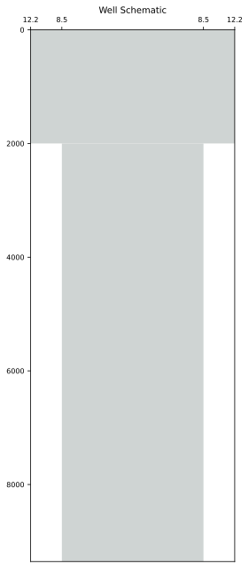
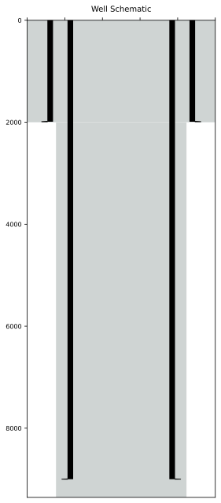
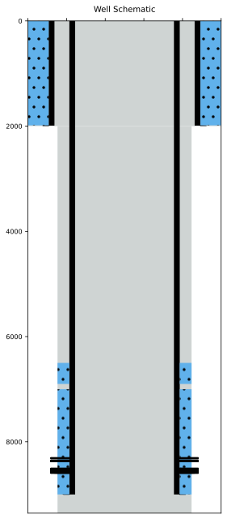
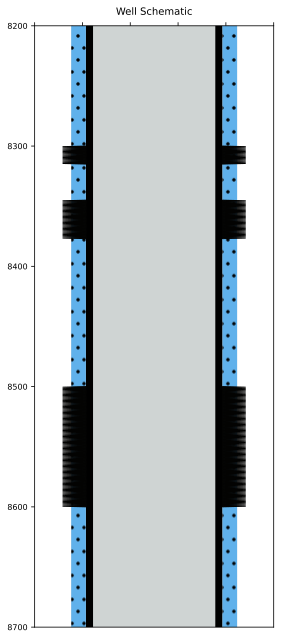
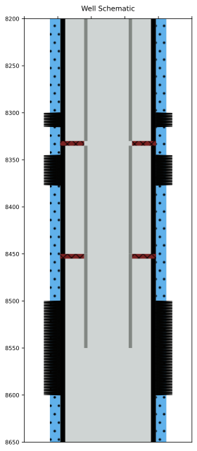

Create a Simple Well Schematics.
import matplotlib.pyplot as plt
from wellschematicspy import WellSchema, OpenHole,Casing,Cement,Perforation,Tubing,BridgePlug,Sleeve,Plug,Packer
You can create a well Schematics with the basics parametes with above a series of Python objects that were imported.
As they are created on top of Pydantic you can easily export the data to either json or a dictionary
Open Hole
The first thing a well must have is a well defined Open Hole. To define a OpenHole it is required the Top, Bottom and Diameter
oh1 = OpenHole(
name = 'surface_hole',
top = 0,
bottom=2000,
diameter = 12.25
)
oh2 = OpenHole(
name = 'production_hole',
top = 2000,
bottom=9356,
diameter = 8.5
)
Plot The Schematics
To plot a well Schematics you have to create an WellSchema Object and assign its attributes.
One of the attributes you can attach to a WellSchema is a list of OpenHole Object
wsh = WellSchema(
open_holes = [oh2,oh1]
)
wsh.plot(xtick=True)

Add Casings
You can add casing to the WellSchema by creating the Casing object
csg1 = Casing(
name='surface_casing',
top=0,
bottom=1990,
diameter = 9.625
)
csg2 = Casing(
name='surface_casing',
top=0,
bottom=9000,
diameter = 7
)
Plot WellSchema with Casings
To plot the Well Schema with the casings created above, just assing a list of Casings to WellSchema attribute casings
wsh.casings = [csg1,csg2]
wsh.plot()

Add Cement
A Cement object must be attached to a Casing Object. You can define more than one cement to each casing
cmt1 = Cement(
name='surface_cement',
top=0,
bottom=1985,
oh=12.25
)
cmt2_sec1 = Cement(
name='prod_cement',
top=7000,
bottom=9000,
oh=8.5
)
cmt2_sec2 = Cement(
name='squeeze',
top=6500,
bottom=6900,
oh=8.5
)
If the WellSchema is already created just assign to each casing a list of cement object.
##
wsh.casings[0].cement = [cmt1]
wsh.casings[1].cement = [cmt2_sec1,cmt2_sec2]
wsh.plot()
Perforations
Like the Cement, Perforations are also attached to casings.
perf1 = Perforation(
name='upper_perf',
top=8300,
bottom=8315,
oh=8.5
)
perf2 = Perforation(
name='mid_perf',
top=8345,
bottom=8377,
oh=8.5
)
perf3 = Perforation(
name='lower_perf',
top=8500,
bottom=8600,
oh=8.5
)
wsh.casings[1].perforations = [perf1,perf2,perf3]
wsh.plot()

You can set the depth limits when plotting the schema
wsh.plot(lims=[8200,8700])

Create Completion
You can create a simple completion schema by adding them to completion attribute in the well
tb1 = Tubing(
name = 'Production String',
top = 0,
bottom = 8330,
diameter = 3.5
)
pkr1 = Packer(
name = 'Production String',
top = 8330,
bottom = 8335,
diameter = 7,
inner_diameter = 3.5
)
tb2 = Tubing(
name = 'Production String',
top = 8335,
bottom = 8450,
diameter = 3.5
)
pkr2 = Packer(
name = 'Production String',
top = 8450,
bottom = 8455,
diameter = 7,
inner_diameter = 3.5
)
tb3 = Tubing(
name = 'Production String',
top = 8450,
bottom = 8550,
diameter = 3.5
)
wsh.completion=[tb1,tb2,tb3,pkr2,pkr1]
wsh.plot(lims=[8200,8650])

Export & Import
You can export the WellSchema to either dictionary or json due they are based pn Pydantic models.
In the same way you can create a instance of any of the objects described so far from a dictionary
dict_well = wsh.dict()
well_from_dict = WellSchema(**dict_well)
print(type(well_from_dict))
<class 'wellschematicspy.schematics.WellSchema'>